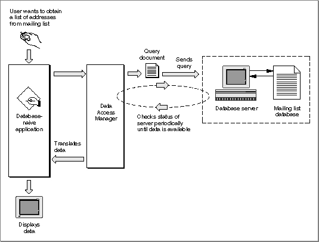

Legacy Document
Important: The information in this document is obsolete and should not be used for new development.
Important: The information in this document is obsolete and should not be used for new development.


The Low-Level Interface
A database-aware application communicates through the low-level interface of the Data Access Manager. You can use the low-level interface to
For example, suppose once again that a company that makes rubber ducks has a mailing list of all of its customers in a database on a minicomputer, and the database has a Data Access Language interface. This time, suppose the Macintosh application the marketing manager is using calls low-level Data Access Manager routines to communicate with the remote database server. Figure 12-3 illustrates the use of the low-level interface. Notice that if you use the high-level interface (Figure 12-2), the query document and the Data Access Manager prepare the query, send the query, retrieve the query results, and translate the data for you. If you use the low-level interface, however, you must perform these functions yourself.
- initiate communication with the data server, sending the user name, password, and other information to the data server
- send a query to the data server
- execute the query that you have sent to the data server
- halt execution of the query
- return status and errors from the data server
- send data to the data source
- retrieve data from the data source
Figure 12-3 Using low-level Data Access Manager routines

Sending a Query Through the Low-Level Interface
To update the mailing list with a new address for customer Marvin M., the marketing manager enters the new address into her application. The application prepares a Data Access Language statement (a query) that specifies the type of data (a character string), the column into which the data item should go (the address column), the row to be modified (the Marvin M. row), plus the actual data the application wishes to send (Marvin M.'s address). The application then passes this query to the Data Access Manager using the low-level interface. (The application can send the query in several pieces or all at once.) The Data Access Manager sends the query to the Data Access Language database extension in the Macintosh computer, and the database extension sends the query to the remote Data Access Language server.Retrieving Data Through the Low-Level Interface
Once the query begins executing, the application can periodically check with the data server to determine whether the data is ready (Figure 12-3). When the data is available, the application must retrieve it one data item at a time. An application that uses the low-level interface must determine the data type of each data item, convert the data into a format that is meaningful to the user, and store the data in memory allocated by the application. Data types are described in "Getting Query Results" beginning on page 12-37.Note that neither the Data Access Manager nor the DAL database extension reads, modifies, or acts on the query that an application sends to the data server. The data server does execute the query, causing the data source to accept new data or prepare data for the application. To use the low-level interface to communicate with a data server, your application must be capable of preparing a query that can be executed by the data server.